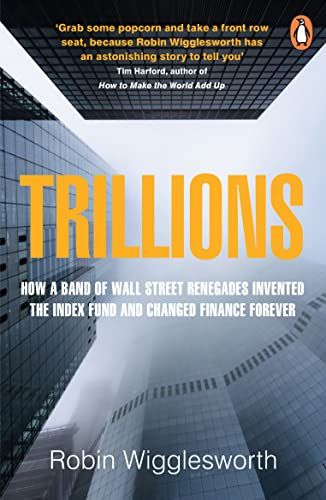

罗宾·威格斯沃思（Robin Wigglesworth）是《金融时报》的资深金融记者，现主编该报的市场评论栏目 FT Alphaville；他2008年从彭博社加入《金融时报》，常驻挪威奥斯陆。《万亿指数》（Trillions）2021年10月由企鹅旗下的 Portfolio 出版，讲的是一个听上去枯燥、实则改变了整个资本市场的故事：被动指数投资如何从一个学术假设，长成今天掌管逾二十万亿美元、并开始重塑公司治理与市场结构的庞然大物。
书名里的"华尔街叛逆者"并非博格尔一人。威格斯沃思把源头一路追到路易·巴舍利耶的随机漫步数学、哈里·马科维茨的投资组合理论、尤金·法玛的有效市场假说，以及公开为指数化背书的保罗·萨缪尔森。真正造出第一批指数基金的，是富国银行的约翰·麦奎恩（John "Mac" McQuown）和威廉·福斯（William Fouse）等人，约在1971年前后为机构客户搭建；美国国民银行、Batterymarch 等也是早期先行者。1976年，杰克·博格尔在先锋集团推出面向散户的"第一指数投资信托"（后来的先锋500指数基金）。故事继续延伸到雷克斯·辛克菲尔德与戴维·布思创办的 DFA，到内特·莫斯特（Nate Most）在1993年催生第一只 ETF（SPDR，代码 SPY），再到拉里·芬克与贝莱德。书的后半部转向一个尖锐的问题：当被动投资大到足以主导市场、少数几家资管巨头握有海量投票权、价格发现机制被削弱，指数基金会不会"太大了"？博格尔本人晚年也警告，若人人都指数化，结果将是"混乱、灾难"。
蒂姆·哈福德（Tim Harford，《卧底经济学家》作者）的推荐语印在封面上："抓把爆米花，坐到前排来，因为罗宾·威格斯沃思要给你讲一个惊人的故事。"（Grab some popcorn and take a front row seat, because Robin Wigglesworth has an astonishing story to tell you.）《金融时报》的吉莲·邰蒂称赞它把"这个晦涩的题材写成了一本易懂又有趣的书……任何想理解现代投资的人都该读它"。安联集团首席经济顾问穆罕默德·埃尔-埃里安则说，本书把"过去一百年投资领域最大的变革，以前所未有的方式呈现了出来"。《华尔街日报》评价它是"一部权威而文笔轻快的历史"。
这本书对普通投资者的意义很直接：绝大多数人如今的退休储蓄都躺在指数基金或 ETF 里，而这套产品的来龙去脉、它压低费率的巨大威力、以及它规模膨胀后带来的新风险，恰恰是被广泛使用却极少被真正理解的。本书简体中文版《万亿指数》由中信出版集团于2024年推出，译者是以指数基金科普著称的"银行螺丝钉"；台湾另有繁体版《兆億大戰》（行路，2024年）。